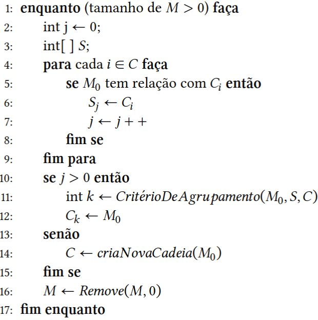
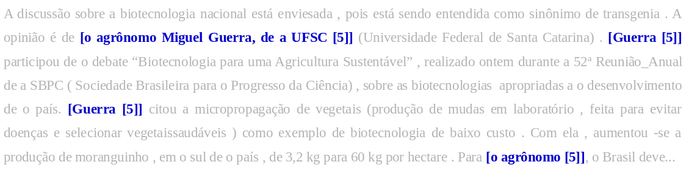

12 Resolução de correferência
12.1 Introdução
No processo de construção de sentidos na língua em uso, interlocutores negociam o universo de discurso de que falam, escolhendo referir-se a algum, ou a alguns, indivíduo(s) cuja identidade estabelecem e da qual garantem a existência (Neves, 2013). Esses referentes, concretizados no texto por expressões referenciais, vão atravessá-lo por inteiro, garantindo unidade temática – isto é, a coerência que constitui um texto (Vieira; Faraco, 2019). Fazer referência a algo ou a alguém no mundo é uma ação intrinsecamente ligada à interação, em que se constituem os objetos de discurso, isto é, entidades que constituem termos das predicações, entidades oriundas de uma construção mental, e não de um mundo real (Neves, 2013).
A construção de referentes se dá por cadeias de texto, redes referenciais construídas pelos objetos de discurso que constituem as marcas da textualidade. Uma cadeia de referência, ou cadeia referencial, corresponde à noção de cadeia anafórica, e cadeia coesiva (Roncarati, 2010). Os elos coesivos em um texto são mecanismos semânticos e léxico-gramaticais essenciais para a tessitura textual. Os referentes se ligam por meio de relações de sentido que formam a base para retomadas em um texto (Roncarati, 2010). Nesse sentido, as cadeias coesivas ligam referentes à(s) sua(s) expressão(ões) referencial(is), em que os fios que tecem o texto são articulados por meio de procedimentos e recursos - o que chamamos de coesão textual (Vieira; Faraco, 2019). Trata-se de elementos cujos mecanismos gramaticais coesivos estão em consonância, sejam eles por reiteração (ou retomada), por associação (ou ligações de sentidos entre as palavras presentes), ou por conexão entre as orações (por conectores) (Antunes, 2007), os quais garantem que o texto seja coerente em sua extensão. Então, se em um dado texto temos uma dada entidade, como “Maria”, nome próprio, é de se esperar que os seus referentes sejam detectados por relações léxico-semânticas do texto, como, por exemplo: por pronome, “ela”, ou por sintagma nominal, “a professora”, “a ativista”, “a mulher” etc.
12.2 Resolução de Correferência
A Resolução de Correferência a partir de textos é uma tarefa útil e também um dos principais desafios da área de Processamento da Linguagem Natural (PLN). Isso porque essa tarefa depende de diversos níveis de processamento, como análise sintática, morfológica, extração de sintagmas nominais, entre outros. Na literatura, encontramos diversas iniciativas para a língua portuguesa que abordam esse problema, geralmente separados entre a resolução de anáfora (Basso, 2009; Bick, 2010; Ferradeira, 1993; Rocha, 2000; Vieira et al., 2005) e o estudo da correferência nominal (Fonseca, 2014; Fonseca et al., 2014; Fonseca et al., 2016a; Freitas et al., 2009). Resolução de Correferência consiste em identificar as diferentes formas que uma mesma menção pode assumir em um discurso. Em outras palavras, esse processo consiste em identificar determinados termos e expressões que remetem a uma mesma referência. Na sentença apresentada no Exemplo 12.1 podemos dizer que [o único país de a União Europeia a não permitir patenteamento de genes] é uma correferência de [A França], da mesma forma que [A UE] é uma correferência de [a União Europeia]. Agrupando esses termos formamos grupos de menções referenciais, mais conhecidos como cadeias de correferência.
Exemplo 12.1
A França resiste como o único país de a União Europeia a não permitir patenteamento de genes. A UE …
Na presente seção, veremos as definições de conceitos fortemente relacionados à tarefa de Resolução de Correferências, tais como os de referentes, entidades nomeadas, sintagmas nominais, entre outras definições.
12.2.1 Referentes
Referentes, ou menções, podem ser definidos como termos os quais usamos para nos referirmos a determinada entidade em um discurso. Em um texto, essas referências podem aparecer como uma entidade nomeada específica ou como parte constituinte de um sintagma nominal.
12.2.1.1 Entidades Nomeadas
Entidades nomeadas, a grosso modo, são elementos que podem ser referenciados por meio de nomes próprios (Jurafsky; Martin, 2023). Esses nomes próprios podem configurar-se em classes específicas, tais como: Pessoa (nomes de pessoas), Organização (nomes de empresas), Local (nomes de lugares), entre outras. Por meio dos exemplos abaixo, podemos identificar diversas entidades nomeadas (ENs), como Banco Nacional de Desenvolvimento Econômico e Social (a), Apple (b), nomes de bandas musicais (c)1.
- O Banco Nacional de Desenvolvimento Econômico e Social (BNDES), empresa pública federal, é hoje o principal instrumento de financiamento de longo prazo …
- A Apple informou que vendeu 5 milhões de iPhone 5 só em um fim de semana …
- Várias bandas de black metal tiveram influências do punk, tais como Venom, Celtic Frost, Bathory, Sarcófago, Darkthrone, Impaled, Nazarene, Mayhem, Hellhammer, Behemoth, entre outras …
12.2.1.2 Sintagmas Nominais
São unidades formadas por uma ou mais palavras que, juntas, desempenham uma função sintática específica na frase (Capítulo Sequência de caracteres e palavras). A natureza de um sintagma depende diretamente do elemento que constitui seu núcleo. Neste capítulo, damos foco a menções expressas por sintagmas nominais. Dito isso, temos então os sintagmas nominais, cujos núcleos podem configurar-se em nome comum, nome próprio ou um pronome. Os pronomes podem apresentar-se, basicamente, nas formas de pronome pessoal, demonstrativo, indefinido, possessivo ou relativo. Um sintagma nominal geralmente é composto por um determinante (artigo, pronome demonstrativo, pronome indefinido e numeral cardinal) seguido de um substantivo. Por exemplo, na sentença do Exemplo 12.2 “O especialista” é um sintagma nominal, e o artigo “O” é seu determinante. Por meio do determinante de um sintagma é possível extrair informações valiosas. Isto é, a palavra “especialista”, por si só, pode assumir diferentes papéis. Contudo, “O especialista” qualifica uma pessoa do sexo masculino, além de informar quem é o especialista (apenas um, não dois ou mais). Notemos que o determinante carrega informações úteis para o processamento linguístico.
Exemplo 12.2
O especialista não respondeu todas as perguntas.
Contudo, sintagmas nominais podem configurar-se em apenas substantivos como no Exemplo 12.3 onde temos dois sintagmas nominais sem determinante explícito: “Rio de Janeiro” e “cidade maravilhosa”. Respectivamente, um nome próprio e um substantivo comum seguido de seu adjunto adnominal. Algumas vezes, esse adjunto pode ser predicativo.
Exemplo 12.3
Rio de Janeiro, cidade maravilhosa
Para entendermos a diferença entre adjunto adnominal e predicativo, basta observarmos que ora um termo pode exercer a função de adjunto, ora de predicativo. Ou seja, enquanto o adjunto adnominal representa o termo acessório da oração, o predicativo se revela como um termo essencial, de modo a deixá-la compreensível, dotada de sentido. Em d), “referência em saúde e segurança” representa parte essencial à constituição do enunciado, pois sem a presença desses termos o entendimento estaria comprometido. Assim, consideramos que se trata de um predicativo, visto que atribui uma característica ao sujeito, cujo núcleo é representado por “cidade”.
- A cidade que é referência em saúde e segurança.
Em e) constatamos que o termo “limpa” pode perfeitamente ser retirado do contexto oracional sem que isso cause nenhum dano ao perfeito entendimento do discurso. Logo, trata-se de um termo acessório da oração ou adjunto adnominal.
- A cidade limpa que é referência em saúde e segurança.
12.2.1.3 Tipos de Referentes
Existem três tipos de referentes: referentes específicos, referentes não-específicos e referentes abstratos.
- Referentes específicos:
-
Quando a menção de uma entidade, basicamente, identifica-a por meio de um nome comum ou próprio.
- Microsoft informou que irá resolver o bug que reinicia o Windows Phone em dezembro.
- Luiz Inácio Lula da Silva sancionou nesta quarta-feira, 29, a lei que regulamenta as atividades de moto-taxista e motoboy de todo país...
- Roger Waters faz seu segundo show em São Paulo.
Em (f) temos um referente específico, isto é, a menção da entidade refere-se diretamente a algo específico, à empresa Microsoft. O referente específico, nesse caso, ainda pode ser classificado como uma entidade do tipo Organização. Existem outros tipos de referentes específicos, como Pessoa (g), Local (h) , entre outros. Notemos que em (h) temos dois tipos de referentes específicos, “Roger Waters” e “São Paulo”, respectivamente entidades do tipo Pessoa e Local.
- Referentes não-específicos:
-
Quando as menções referem-se a uma entidade de forma não específica (autoridades, funcionários, policiais...), como mostram os exemplos “i”, “j” e “k”.
- Policiais invadiram a casa, porém os bandidos já haviam fugido.…
- Funcionários estão descontentes. Eles afirmam ainda não terem recebido o seu décimo terceiro salário.
- Autoridades disseram que estão cansados de fazer as mesmas declarações.
- Referentes abstratos:
-
como o próprio nome sugere, são entidades abstratas, “não físicas”. Tratam de estados e qualidades, sentimentos e ações, como: medo, viagem, coragem, felicidade, esforço... Exemplos “l” e “m”.
- O medo é algo que deve ser superado. Para isso, concentre-se em seus objetivos.
- A viagem foi ótima, porém o tempo podia estar melhor.
12.2.2 Relações Semânticas Referenciais
Nesta subseção temos como foco tornar claro os tipos de relações semânticas que podem indicar uma relação de correferência.
12.2.2.1 Hiperonímia e Hiponímia
Hiperonímia é uma relação semântica que expressa um sentido amplo entre dois termos, partindo de uma classe mais ampla para uma subclasse mais específica, por exemplo: (inseto abelha). Neste caso, o termo “inseto” é um hiperônimo de “abelha”. Já Hiponímia representa uma relação contrária, ou seja, parte de uma classe mais específica para uma classe mais abrangente. Para o exemplo previamente dado temos que “abelha” é um hipônimo de “inseto”. Os hiperônimos e hipônimos são importantes no campo semântico, pois são muito usados na retomada de elementos em um texto, a fim de evitar repetições desnecessárias. No que diz respeito à identificação de menções referenciais em um discurso, na língua portuguesa é comum partirmos de termos específicos para termos mais abrangentes. Dessa forma, a relação de Hiponímia geralmente ocorre com maior frequência.
- João e Maria estão muito felizes com o seu cão. O animal é fiel e companheiro.
- Nada disso vai fazê-los mudar de carro. O pequeno veículo parece suprir todas as necessidades deles.
12.2.2.2 Sinonímia
Trata-se de uma relação entre dois termos, em que estes, mesmo sendo distintos lexicalmente, possuem significados muito próximos, por exemplo: (menino garoto). É importante referir que muitas vezes os sinônimos podem ter conotações diferentes, dependendo do contexto, como: (gato bichano) e (gato atraente). Em um texto, a utilização de sinônimos de uma palavra é importante para evitar repetições. Assim, um sinônimo é uma palavra que, apesar de ser diferente, tem o mesmo significado (ou semelhante) e, por isso, a sua inclusão não altera o sentido do texto em questão.
- Esse carro é maravilhoso. Também, estamos falando de um automóvel de 100 mil reais.
- Ana comprou um gato. O bichano adora dormir no sofá.
12.2.3 Correferência, Anáfora e Catáfora
Para o entendimento sobre o que é correferência, é relevante também definirmos anáfora, já que seus conceitos estão relacionados. Anáfora pode ser definida como a retomada de uma expressão apresentada anteriormente em um texto. Quando uma entidade é mencionada pela primeira vez textualmente, temos a evocação da entidade. Durante a leitura da sequência do texto, quando essa entidade é novamente mencionada, temos a realização do acesso a essa entidade. A expressão que faz o acesso é dita como anafórica, e a expressão anterior é dita como seu antecedente (Vieira et al., 2012). Há casos de anáfora em que o termo anafórico e o antecedente são correferentes, isto é, remetem a uma mesma entidade (como os Exemplos “r” e “s” ilustram), mas há também casos de anáfora sem correferência, como podemos ver em “t”.
- A Ana comprou um cão. O animal já conhece todos os cantos da casa. Nesse exemplo, o termo anafórico é o grupo nominal “o animal”, que retoma o valor referencial do antecedente, “o cão”. É a relação entre “cão” e “animal” que suporta a correferência.
- Maria está com febre. Acho que ela está doente. Notemos que a interpretação referencial do sintagma nominal “ela” depende da sua relação anafórica com o sintagma nominal “Maria”.
- João faz 18 anos no dia 2 de Julho de 2001. No dia seguinte, parte para uma grande viagem pela Europa. Já nesse caso, o valor referencial da expressão sublinhada constrói-se a partir da interpretação do antecedente, a expressão adverbial temporal “no dia 2 de Julho de 2001”. Assim, “No dia seguinte” designa o dia 3 de Julho de 2001.
Catáfora: semelhante à anáfora mas em ordem oposta, uma relação catafórica ocorre quando um termo se refere a outro que vem à frente e lhe dá, a partir deste, o seu sentido. Conforme podemos ver no exemplo “u”:
- A mãe olhou-o e disse: - Meu filho, estás com um olhar cansado.
Correferência: é um fenômeno que ocorre quando duas ou mais menções em um discurso referem-se a uma mesma entidade. O conjunto de menções a uma mesma entidade no texto é denominado de cadeia de correferência.
O João está doente. Vi-o na semana passada. Neste caso, o pronome “o” é uma anáfora de “João”, pois, para ser compreendido, necessita resgatar a frase anterior para que seu significado seja construído.
Temos também o tipo aposto, que ocorre quando o termo da oração se relaciona a uma entidade para esclarecê-la ou explicá-la, como em “w” e “x”.
Cubatão, a cidade mais poluída do Brasil, localiza-se na Baixada Santista.
Maria comprou várias frutas: mamão, melancia, abacate e uva. Normalmente, o aposto aparece isolado por sinais de pontuação, sendo mais comum aparecer entre vírgulas ou então introduzido por dois pontos. Nos exemplos acima podemos notar que “cidade” é correferente de “Cubatão”, e “mamão, melancia, abacate e uva” são correferentes de “frutas”.
(extraído do corpus Summ-it (Collovini et al., 2007)) “A discussão sobre a biotecnologia nacional está enviesada, pois está sendo entendida como sinônimo de transgenia. A opinião é de Miguel Guerra, da UFSC (Universidade Federal de Santa Catarina). Guerra participou do debate”Biotecnologia para uma Agricultura Sustentável”... Para o agrônomo, o Brasil deve buscar o desenvolvimento de transgenias que tentem melhorar as condições da agricultura local...”
No exemplo “y”, as expressões “Guerra” e “o agrônomo” fazem referência à entidade “Miguel Guerra”, já mencionada anteriormente no texto. Para não repetir a mesma expressão, faz-se uso de outra diferente, mas que retoma a mesma entidade mencionada previamente. Esse é um método muito utilizado no processo de escrita para não deixar o texto repetitivo, e está diretamente relacionado a coesão referencial e sequencial. Notemos que a coesão referencial é responsável por criar um sistema de relações entre as menções dentro de um texto, permitindo que o leitor identifique termos e expressões que remetem a uma mesma entidade. Junto a isso temos também a coesão sequencial, responsável por criar condições que auxiliam na progressão textual. De forma geral, as flexões de tempo, as de modo dos verbos e as conjunções são mecanismos responsáveis pela coesão sequencial e auxiliam na coesão referencial.
Esses fatores inferem diretamente nas dificuldades existentes na tarefa de resolução de correferência, dado que estão relacionados diretamente a questões linguísticas e a habilidades cognitivas humanas complexas, de difícil reprodução por sistemas computacionais. Em poucas palavras, o desafio é: como inferir computacionalmente que a palavra “agrônomo”, que está sendo citada dois parágrafos abaixo da expressão “o agrônomo Miguel Guerra”, está se referindo a esta entidade e não a uma outra?
Portanto, o conjunto dessas expressões referenciais relativas a uma mesma entidade de mundo denomina-se cadeia de correferência. Esse conjunto é responsável pela construção coesa de um texto e por isso sua importância, já que a coesão é responsável pela compreensão textual. No exemplo “y”, podemos afirmar que “Miguel Guerra” é o antecedente e “Guerra” é a anáfora. Dessa forma, expressões correferentes fazem referência à mesma entidade, enquanto expressões anafóricas e catafóricas podem retomar uma referência ou ativar um novo referente. Anáfora e catáfora pressupõem um par ordenado, enquanto que a correferência remete à ideia de conjunto (Poesio et al., 2016).
12.2.4 Referências Endofóricas e Exofóricas
Quando lidamos com relações referenciais é importante deixarmos claro que estas podem configurar-se em dois tipos: endofóricas e exofóricas. Referências endofóricas são aquelas que antecedem ou sucedem informação dentro de um texto. Essas comumente ocorrem na forma de anáforas ou catáforas, conforme visto nos exemplos anteriores. Já relações exofóricas referem-se a relações que ocorrem fora de um dado texto e necessitam de um prévio conhecimento de mundo, local ou momento para serem identificadas, como em:
- O Bruxo do Cosme Velho foi homenageado em nossa cidade.
Notemos que no exemplo “z” não existem referências para os termos “Bruxo do Cosme Velho” e “nossa cidade”. É necessário recorrermos ao conhecimento de mundo para inferirmos que “Bruxo do Cosme Velho” refere-se a Machado de Assis. Da mesma forma, a referência do termo “nossa cidade” não está no texto, mas pode estar na memória do leitor ou na memória do escritor.
12.2.5 Correferência, coerência e coesão
Quando lidamos com a resolução de correferência, existem características que geralmente ficam implícitas em textos bem escritos e estruturados, mas que merecem atenção, dado que influenciam diretamente na obtenção de bons resultados. Dentro desse contexto, temos a coerência e a coesão textual. De acordo com Koch; Travaglia (2012) a coerência textual é algo que tem a ver com a boa formação do texto, não em um sentido gramatical, mas sim em nível de interlocução. A coerência é algo que se estabelece na interação, na interlocução ou em uma situação comunicativa entre duas pessoas. Em poucas palavras, a coerência é o que faz com que o texto tenha sentido, devendo ser vista como um princípio de interpretabilidade do texto e também com a capacidade que o leitor possui para calcular seu significado. A coerência é vista também como uma continuidade de sentidos perceptíveis no texto, a qual resulta em uma conexão conceitual cognitiva entre os elementos do texto. Como podemos perceber, a coerência é, ao mesmo tempo, semântica e pragmática aplicadas, pois a forma como construímos nossas ideias pode variar, de acordo com nosso conhecimento de mundo.
Paralelamente ao conceito de coerência temos a coesão. Ao contrário da coerência, a coesão é explicitamente revelada por meio de marcas linguísticas, sendo de caráter linear, dado que manifesta-se na organização sequencial de um texto. Em poucas palavras, a coesão está muito mais ligada à sintaxe e à gramática. Notemos que esses conceitos são muito importantes para a tarefa de Resolução de Correferência, dado que a correferência de um termo e seu antecedente é guiada por essa construção de ideias.
12.3 Abordagens Computacionais para Resolução de Correferência
Na literatura, encontramos uma grande variedade de abordagens que propõem resolver correferência em diversos idiomas, como: inglês, chinês, árabe, espanhol, galego, português, entre outros (Chang et al., 2012; Coreixas, 2010; Fernandes et al., 2014; Fonseca et al., 2014; Fonseca, 2014; Fonseca et al., 2015; Lee et al., 2017; Martschat; Strube, 2015; Ng; Cardie, 2002; Rahman; Ng, 2011a; Soon et al., 2001; Yang et al., 2008). Essas abordagens, em sua maioria, são voltadas para a língua Inglesa e baseadas em aprendizado de máquina. Contudo, é possível encontrarmos alguns modelos baseados em regras linguísticas (Garcia; Gamallo, 2014; Hou et al., 2014; Lee et al., 2013). Veremos que, diferente dos modelos baseados em regras, o aprendizado de máquina pode se ramificar em diferentes propostas, como Mention-Pair, Entity-Mention, Mention-Ranking e Antecedent-Trees.
12.3.1 Modelos Baseados em Regras
Modelos baseados em regras consistem em uma série de passos que definem se duas menções são correferentes entre si. Abordagens baseadas em regras requerem um conhecimento prévio mais aprofundado referente ao idioma e ao domínio a serem tratados. Por exemplo, ao lidarmos com aprendizado de máquina, durante a implementação e seleção de features, caso sejam selecionadas features irrelevantes, a maioria dos algoritmos de treino consegue detectar e desconsiderar tal característica. Já em abordagens voltadas a regras, não temos essa flexibilidade. Cada regra deve ser elaborada cuidadosamente, pois não temos um modelo estatístico como apoio. Outra característica forte desses modelos é a forma como as menções são agrupadas. Ou seja, em abordagens baseadas em regras não existe etapa de treinamento: definidas as regras, uma menção \(m_j\) é comparada com todas as menções que a antecedem e, caso alguma das regras seja satisfeita, essas menções são agrupadas. Esse tipo de método é o mais utilizado pelos modelos de regras atuais (Garcia; Gamallo, 2014; Lee et al., 2013).
Um dos principais modelos de regras contido na literatura foi proposto por Lee et al. (2011). Denominado Stanford Multi-Pass Sieve, é um sistema para a resolução de correferência puramente baseado em regras linguísticas. Seu modelo possui dez Sieves/filtros, cujo objetivo é agrupar menções correferentes, caso cada regra ou conjunto de regras sejam satisfeitos. O modelo de Lee et al. foi proposto para o inglês, durante a CoNLL2 (Conference on Natural Language Learning), ficando em primeiro colocado no ranking de melhores modelos. Os modelos foram avaliados por meio do corpus Ontonotes (Pradhan et al., 2011), em conjunto do CoNLL Scorer (Pradhan et al., 2014). Alguns anos após surgiram outras abordagens semelhantes com o mesmo propósito, como o trabalho de Garcia; Gamallo (2014), voltado ao português, ao espanhol e ao galego. Embora abordagens baseadas em regras possam ser de custoso planejamento, dado que cada idioma possui suas características, estas podem provar-se eficazes e competitivas, principalmente quando há carência por corpora anotados.
12.3.2 Modelos Baseados em Aprendizado de Máquina
12.3.2.1 Mention Pair
A primeira delas, e a mais popular, provavelmente por sua simplicidade, é a abordagem baseada em pares de menções. Basicamente, modelos que lidam com essa abordagem optam por efetuar seu treino por meio de pares de menções, de forma a determinar se duas menções são correferentes ou não. Os modelos baseados em pares de menções têm influenciado significativamente os trabalhos que propõem a resolução de correferência utilizando técnicas de aprendizado de máquina nos últimos dezesseis anos (Soon et al., 2001). Modelos baseados em pares de menções visam responder se devem ou não classificar como correferente uma menção \(m_j\) com um candidato antecedente \(m_i\). Inicialmente, para treinar um modelo baseado em pares, é necessário extrair características/features que possibilitem obter alguma informação proveniente da comparação entre \(m_i\) e \(m_j\). No Quadro 12.1, podemos observar as features mais utilizadas pela literatura.
Quadro 12.1 Features mais comuns na literatura.
Um dos grandes desafios ao utilizar uma abordagem baseada em pares de menções se dá no desbalanceamento entre as classes positiva (pares correferentes) e negativa (pares não correferentes). Ou seja, todo modelo requer, além de amostras positivas, amostras de pares negativos. Dada essa premissa, é necessário realizar a construção de pares. Nessa etapa, ao cruzarmos essas menções, consequentemente teremos muito mais amostras negativas do que positivas. Objetivando minimizar esse desbalanceamento entre as classes, alguns trabalhos propõem diferentes técnicas para geração de pares.
Soon et al. (2001) realizam um pareamento distinto para cada uma das classes: para os pares positivos, dado o conjunto de menções C={\(m_i\),\(m_j\),\(m_k\), \(m_l\)} (todas correferentes entre si), apenas as menções imediatamente adjacentes formam pares (Quadro 12.2): \(P_p\)= {(\(m_i\),\(m_j\)), (\(m_j\),\(m_k\)), (\(m_k\),\(m_l\))}. Para gerar os pares negativos, considere o conjunto de menções M={\(m_m\), \(m_n\), \(m_o\), \(m_p\), \(m_q\)} em que apenas as menções \(m_m\) e \(m_q\) são correferentes. Dentro desse contexto, a última menção deste conjunto, \(m_q\), faz par com todas as anteriores, exceto com \(m_m\): \(P_n\)={ (\(m_q\),\(m_p\)), (\(m_q\),\(m_o\)) e (\(m_q\),\(m_n\))} (Quadro 12.3).
Notemos que no Quadro 12.2, o conjunto de menções considerado é uma cadeia de correferência. Já no Quadro 12.3, o conjunto de menções não consiste em uma cadeia. Apenas as menções \(m_m\) e \(m_q\) são correferentes. Logo, não formam par.
Quadro 12.2 Geração de pares positivos proposta por (Soon et al., 2001).
Quadro 12.3 Geração de pares negativos proposta por (Soon et al., 2001).
Martschat; Strube (2015) propõem uma mesma metodologia para geração de pares positivos e negativos: dado documento \(D_x\), que possua um conjunto de menções M={\(m_i\), \(m_j\),\(m_k\), \(m_l\), \(m_m\), \(m_n\)} em que apenas \(m_l\) e \(m_i\) são correferentes, o conjunto de pares (positivos e negativos) será: P= {(\(m_l\),\(m_k\)), (\(m_l\),\(m_j\)), (\(m_l\),\(m_i\))}. Basicamente, para cada par correferente (\(m_x\),\(m_y\)), a geração de amostras negativas será realizada com as menções entre (\(m_x\),\(m_y\)). Notemos que essa construção é efetiva pelo fato de não gerar uma grande quantidade de amostras negativas. No entanto, devido a essa restrição, pode-se perder pares negativos que possuam informações relevantes.
Quadro 12.4 Geração de pares positivos e negativos proposta por (Martschat; Strube, 2015).
Em (Fonseca et al., 2015), para um dado conjunto de menções M={\(m_i\),\(m_j\),\(m_k\)}, temos: P={(\(m_i\),\(m_j\)), (\(m_i\),\(m_k\)), (\(m_j\),\(m_k\))}. Basicamente, cada menção faz par com a próxima, independente de esta ser correferente ou não. Notemos que a quantidade de pares será muito maior que em (Martschat; Strube, 2015). Para minimizar o desbalanceamento entre as classes foi utilizado random undersampling, que consiste na seleção aleatória de n pares negativos, em que n é a quantidade de pares positivos. Por meio de experimentos, foi visto que os níveis de balanceamento “1 para 1” (um par positivo para cada par negativo) e “1 para 2” (um par positivo para cada dois pares negativos) foram os que obtiveram melhores resultados.
Quadro 12.5 Geração de pares positivos e negativos proposta por (Fonseca et al., 2015).
12.3.3 Entity-Mention
Diferente do tradicional Mention Pair, o Entity-Mention (Yang et al., 2008) explora a propriedade de representação do discurso, tendo em vista o conhecimento de quando uma entidade é nova no discurso ou anafórica (semelhante à nossa metodologia de agrupamento proposta). Para conceber os pares, assume-se que uma instância de treino positiva consiste em i{\(e_x\),\(m_y\)}, na qual \(m_y\) é uma menção ativa e \(e_x\) é uma entidade parcial, encontrada antes de \(m_y\). Para cada menção anafórica \(m_y\), uma única instância de treinamento positivo é criada para a entidade parcial à qual \(m_y\) pertence. Para os pares negativos, é criado um grupo de instâncias para cada entidade cuja última menção ocorra entre \(m_y\) e o antecedente mais próximo de \(m_y\). Por exemplo: considere o conjunto de menções M={\(e_i\),\(m_j\),\(e_k\),\(m_l\),\(m_m\),\(m_n\)}. Assumindo que neste conjunto tenhamos duas cadeias: C1={\(e_i\),\(m_j\), \(m_m\)} e C2={\(e_k\),\(m_n\)} e \(m_n\) é a menção ativa. Teremos então, como conjunto dos pares positivos, \(P_p\)={(\(m_n\),\(e_k\))} e como conjunto de pares negativos \(P_n\)={(\(m_n\),\(m_m\)), (\(m_n\),\(m_j\)), (\(m_n\),\(e_i\)), (\(m_n\),\(m_l\))}. Basicamente, assumindo que \(m_n\) representa a menção ativa e \(e_k\) representa seu antecedente, notemos que temos duas menções entre elas (\(m_l\) e \(m_m\)). Nesse caso, toda menção ou cadeia pertencente a m\(_l\) e m\(_m\) forma par com a menção ativa. Nos Quadros 12.6 e 12.7 temos os pares gerados, considerando \(m_n\) como menção ativa. Notemos que a cada iteração a menção ativa será outra e com isso novos pares serão gerados, sempre utilizando o mesmo critério.
Quadro 12.6 Geração de pares positivos proposta por (Yang et al., 2008).
Quadro 12.7 Geração de pares negativos proposta por (Yang et al., 2008).
Outro diferencial deste modelo focado em entidades está na forma de representar suas features: os autores definem três tipos de instâncias, que representam como as menções se relacionam: link(\(e_x\),\(m_y\)), em que \(m_y\) representa uma menção ativa e \(e_x\) representa uma entidade parcial; has_mention(\(e\),\(m\)), descrevendo todas as menções as quais determinada menção está ligada. Por exemplo, para a cadeia previamente mencionada, C1={\(e_i\),\(m_j\), \(m_m\)}, teremos então has_mention(\(e_i\),\(m_j\)), has_mention(\(e_i\),\(m_m\)); e o último denota as características de cada par de menções, seguindo a seguinte estrutura: nome_da_feature(\(m_x\),\(m_y\), 0), representando respectivamente: o nome da feature, o par de menções e um valor binário (0 para falso e 1 para verdadeiro).
12.3.4 Mention-Ranking
No Mention-Ranking model, assim como o Mention pair, cada instância de treino i(\(m_x\),\(m_y\)) representa \(m_y\) e sua menção precedente \(m_x\). Basicamente, as features que representam uma instância e um método para criar uma instância de treino são idênticas às utilizadas pelo Mention Pair model. A diferença reside em rotular as instâncias de treino, assumindo que \(I_y\) é um conjunto de instâncias de treino, criadas para a menção anafórica \(m_y\), o rank para i(\(m_x\),\(m_y\)) em \(I_y\) é o rank de \(m_y\) entre os candidatos antecedentes, que é 2 se \(m_x\) é o antecedente mais próximo de \(m_y\) ou 1 caso contrário. Em poucas palavras, o antecedente mais próximo de sua anáfora recebe um ranking maior em relação às demais menções. Considere o seguinte conjunto de menções M={\(m_i\), \(m_j\), \(m_k\), \(m_l\), \(m_m\), \(m_n\)}, contendo as seguintes cadeias C1={\(m_i\), \(m_k\), \(m_n\),} C2={\(m_j\), \(m_l\),}. Notemos que, para \(m_n\), teremos as seguintes instâncias:
Quadro 12.8 Instâncias de treino geradas para \(m_n\)
Notemos que \(m_i\) não faz par com \(m_n\), mas sim com \(m_k\), dado que \(m_i\) é antecedente de \(m_k\). Dado que \(m_k\) é o antecedente mais próximo de \(m_n\), o par recebe ranking 2. Já os demais pares (considerando \(m_n\)) recebem valor 1. Mesmo o Mention-Ranking não sendo muito popular, seus resultados são superiores às abordagens baseadas em pares de menções, como podemos ver em (Rahman; Ng, 2011b) e (Martschat; Strube, 2015).
12.3.5 Antecedent-Tree
Na proposta de (Fernandes et al., 2014), também baseada em pares de menções, os autores propõem um conjunto de regras, as quais objetivam reduzir a quantidade de pares menos propensos a serem correferentes. Assim, para um dado par de menções, caso pelo menos uma das regras do Quadro 12.9 seja satisfeita, o par é considerado válido para utilizar em seu treinamento (seja ele um par positivo ou negativo).
Quadro 12.9 Conjunto de regras para seleção de pares proposto por (Fernandes et al., 2014)
Referente ao motivo dos autores nomearem sua abordagem como Antecedent-Tree model, reside na forma de representar o agrupamento de suas menções: para representar o agrupamento de menções correferentes entre si são utilizadas estruturas chamadas de árvores. Uma árvore de correferência é uma árvore cujos nós são dirigidos às menções e os arcos representam alguma relação entre elas. Basicamente, para cada documento é gerado um conjunto de árvores e de sub-árvores, em que cada sub-árvore representa uma menção e seus referentes. Ou seja, cada anáfora pode ser considerada uma raiz ou nodo-pai e seus antecedentes podem ser considerados nodos-filhos.
Notemos que cada abordagem possui uma forma distinta para concepção de suas amostras de treino, assim como que para representar suas estruturas de agrupamento. Martschat; Strube (2015) propuseram uma forma unificada de representar tais estruturas, os autores a chamam de estrutura latente. Basicamente, uma estrutura latente é representada por um conjunto de arrays “V”, “A” e “L”. Analisando-a, podemos verificar que uma estrutura latente pode ser abstraída à forma de um grafo, o qual “V” representa um conjunto de nós/menções; “A” representa o conjunto de arestas, e “L”(label), representa um sinal, positivo ou negativo, informando se dada menção é correferente de outra.
12.3.5.1 Modelos de linguagem
Os modelos de linguagem (Capítulo Modelos de linguagem) foram também incorporados às tarefas de resolução de correferência, Joshi et al. (2019) apresentam uma análise do modelo BERT nessa tarefa.
Com os avanços recentes dos modelos de linguagem, abordagens alternativas, como a de Kirstain et al. (2021), dispensam a necessidade de representação de spans.
12.3.6 Modelos Voltados à Língua Portuguesa
Para a língua portuguesa, Silva (2011) propôs um modelo para a resolução de correferência utilizando o conjunto de etiquetas semânticas providas pelo corpus do HAREM (Freitas et al., 2010). Para detectar tais categorias, Silva utilizou o parser PALAVRAS (Bick, 2000) e o reconhecedor de entidades nomeadas Rembrandt (Cardoso, 2012). Como base de conhecimento semântico, o autor utilizou o Tep2.03 (Maziero et al., 2008), um thesaurus contendo relações de sinonímia e antonímia para a língua portuguesa.
Lidando com aprendizado supervisionado, temos o trabalho de Coreixas (2010), o qual focou nas categorias “Pessoa”, “Local”, “Organização”, “Acontecimento”, “Obra”, “Coisa” e “Outro”. Como recursos, foram utilizados o corpus do HAREM (Freitas et al., 2010), o parser PALAVRAS (Bick, 2000) e o corpus Summ-it (Collovini et al., 2007). De forma a provar que o uso de categorias semânticas pode auxiliar na tarefa de resolução de correferência, o autor compara duas versões de seu sistema: a primeira, sem fazer o uso de categorias semânticas; e a segunda, fazendo uso de categorias. Como resultado, Coreixas mostrou que o uso de categorias podem prover melhorias significativas, dado que o uso de categorias pode auxiliar a determinar se dado par de menções é correferente ou não. O autor também mostrou a importância do conhecimento de mundo para esta linha de pesquisa.
Seguindo uma linha semelhante ao trabalho de Coreixas (2010), Fonseca et al. (2014) propõem um modelo baseado em aprendizado de máquina, com foco em nomes próprios e nas categorias de entidades “Pessoa”, “Local” e “Organização”. Para detectar as entidades, foram utilizados os recursos Repentino (Sarmento et al., 2006) e NERP-CRF (Amaral, 2013). Adicionalmente, para casos mais genéricos de entidades, os autores utilizaram listas, contendo substantivos comuns, que remetem a determinadas entidades, tais como: [advogado, agrônomo, juiz] para a categoria “Pessoa”, e [avenida, rua, praça, cidade] para “Local”.
Diferente dos trabalhos anteriores (Garcia; Gamallo, 2014) abordam um modelo baseado em regras (semelhante ao de Lee et al. (2013)), mas para múltiplos idiomas (português, espanhol e galego). Em seu trabalho, os autores focam apenas na categoria semântica “Pessoa”. Mais recentemente Fonseca (2018) propôs um modelo baseado em regras linguísticas, similar ao modelo de Lee et al. (2013), mas totalmente voltado ao português.
Adicionalmente, Fonseca (2018) introduziu conhecimento semântico ao seu modelo, provindo do Onto.PT (Gonçalo Oliveira; Gomes, 2014) e uma nova metodologia de agrupamento de menções (Fonseca et al., 2018). Basicamente, seu método (Figura 12.1) recebe como entrada uma lista ordenada de menções “M” e devolve uma lista de Cadeias contendo essas menções devidamente agrupadas, de acordo com o critério selecionado.

O método proposto foi baseado no trabalho de Heim (2008) e consiste em explorar a representação do discurso4. Para isso, assume-se que qualquer menção é nova no discurso se não possuir ligação de correferência com uma ou mais menções antecedentes. Essas ligações são consideradas utilizando o conjunto de regras proposto pelo autor. Assim, sempre que uma menção não possui uma relação referencial (nenhuma regra é satisfeita), uma nova cadeia é gerada. Basicamente utilizou-se uma lista de menções M (esta lista é ordenada na ordem em que as menções ocorrem no texto), contendo todas as menções de um documento de entrada. Cada menção pode ter uma ligação de correferência entre uma ou mais cadeias “C”. Dessa forma, os Ids dessas cadeias são armazenados em um vetor “S” (apenas se M\(_0\) possui alguma relação de correferência com C\(_i\) (se alguma regra retorna o valor verdade). O próximo passo é responsável por agrupar uma menção atual M\(_0\) a uma cadeia existente C\(_k\) ou criar uma nova cadeia de correferência, usando M\(_0\)5. Isso depende do critério de agrupamento utilizado. Dos critérios propostos pelo autor, vale mencionar o que obteve melhores resultados: o “Peso por Regra", o qual para cada menção explora o conjunto C, com o objetivo de encontrar o maior peso (em nível de cadeias). O modelo proposto possui um total de 13 regras e; para cada regra satisfeita, soma-se 1 à pontuação. Assim, se para uma dada cadeia C\(_x\) existem duas menções correferentes com uma menção M\(_0\) (M\(_a\) e M\(_b\)) e M\(_a\) e M\(_b\) possuem respectivamente três e duas regras com valor verdade, o peso da cadeia será cinco.
12.4 Avaliação da Tarefa de Resolução de Correferência
A tarefa de resolução de correferência é complexa e envolve diferentes níveis de processamento. Logo, avaliar um modelo de correferência não é uma tarefa simples, dado que existem muitos detalhes a serem considerados, como a detecção de menções, agrupamentos realizados, agrupamentos não realizados6. Na literatura encontramos cinco métricas propostas para avaliar esses modelos: MUC (Vilain et al., 1995), B-CUBED (Bagga; Baldwin, 1998), Ceaf\(_e\), Ceaf\(_m\) (Luo, 2005) e BLANC (Recasens; Hovy, 2011). Cada uma dessas métricas visa avaliar uma característica específica de cada modelo. Anualmente, competições como a CoNLL (Pradhan et al., 2012) são realizadas, visando motivar o desenvolvimento de sistemas. Nos anos de 2011 e 2012 essas competições foram voltadas à tarefa de Resolução de Correferência. Com o objetivo de avaliar os modelos participantes por meio de uma pontuação única, a conferência propôs uma nova métrica, chamada CoNLL (Pradhan et al., 2014). A métrica CoNLL consiste na média da medida-F de três outras métricas da literatura, como veremos nessa seção.
12.4.1 Métricas de Avaliação
12.4.1.1 MUC:
Baseada em cadeias, mede quantos agrupamentos de menções são necessários para cobrir as cadeias padrão. Por exemplo, considere que o conjunto K (cadeia de referência) seja composto pelas seguintes ligações(links) de correferência {AB, BE, CD} e que o conjunto R (cadeia predita pelo modelo) seja composto por {AB, CD}. Para este caso podemos ver que falta uma ligação no conjunto R. teremos então Abrangência= \(\dfrac{2}{3} =0,67 \ (67\%)\) e Precisão = \(\dfrac{2}{2} = 1 \ (100\%)\). De forma mais geral, o cálculo da métrica MUC pode ser obtido por meio das seguintes fórmulas:
\[Abrang\hat{e}ncia = \dfrac{\sum\limits_{i=1}^{N_k} (\|K_i\| - \|p(K_i)\|)}{\sum\limits_{i=1}^{N_k} (\|K_i\| - 1}\]
\[Precis\tilde{a}o = \dfrac{\sum\limits_{i=1}^{N_r} (\|R_i\| - \|p'(R_i)\|)}{\sum\limits_{i=1}^{N_r} (\|R_i\| - 1)}\]
Em que: K\(_i\) é i-ésima entidade padrão (key entity referência) e p(K\(_i\)) é o grupo de partições criado por meio da intersecção de K\(_i\) e os links preditos pelo modelo; R\(_i\) é a i-ésima entidade predita pelo modelo (Response entity) e p’(R\(_i\)) é o conjunto de partições criadas por meio da intersecção de R\(_i\) e K\(_i\). N\(_k\) e N\(_r\) representam a quantidade de menções padrão e resposta, respectivamente.
12.4.1.2 B-CUBED:
Baseada em menções, gera resultados considerando as menções presentes e ausentes de cada entidade em dada cadeia. Basicamente, a métrica B-Cubed atribui um peso para as menções, baseando-se na quantidade total de menções existentes. Sua abrangência e precisão são obtidas por:
\[Abrang\hat{e}ncia = \dfrac{\sum\limits_{i=1}^{N_k} \sum\limits_{j=1}^{N_k} \dfrac{\|K_i \cap R_j\|^2}{K_i} }{\sum\limits_{i=1}^{N_k} K_i}\]
\[Precis\tilde{a}o = \dfrac{\sum\limits_{i=1}^{N_k} \sum\limits_{j=1}^{N_k} \dfrac{\|K_i \cap R_j\|^2}{R_j} }{\sum\limits_{i=1}^{N_k} R_j}\]
Em que: K representa o conjunto das key entities (menções padrão) e R o conjunto de menções preditas pelo modelo. Por exemplo, dadas as cadeias de referência :
- \(C_{K1}\) = {A, B, C, D, E};
- \(C_{K2}\) = {F, G};
- \(C_{K3}\) = {H, I, J, K, L}.
E as cadeias preditas pelo modelo:
- \(C_{R1}\) = {A, B, C, D, E};
- \(C_{R2}\) = {F, G, H, I, J, K, L}.
Cada menção possuirá o peso de \(\dfrac{1}{12}\), dado que o total de menções existente é 12. Dito isso temos então:
Abrangência = \(\dfrac{1}{12} * [\dfrac{5}{5} + \dfrac{5}{5} + \dfrac{5}{5} + \dfrac{5}{5} + \dfrac{5}{5} + \dfrac{2}{2} + \dfrac{2}{2} + \dfrac{5}{7} + \dfrac{5}{7} + \dfrac{5}{7} + \dfrac{5}{7} + \dfrac{5}{7} ] = 1 \ (100\%)\)
Precisão = \(\dfrac{1}{12} * [\dfrac{5}{5} + \dfrac{5}{5} + \dfrac{5}{5} + \dfrac{5}{5} + \dfrac{5}{5} + \dfrac{2}{7} + \dfrac{2}{7} + \dfrac{5}{7} + \dfrac{5}{7} + \dfrac{5}{7} + \dfrac{5}{7} + \dfrac{5}{7} ] = \dfrac{16}{21} = 0,76 \ (76\%)\)
12.4.1.3 CEAF:
Baseada no alinhamento de menções e entidades, possui duas variações: CEAF\(_m\) (\(\Phi_3\)) e CEAF\(_e\) (\(\Phi_4\)).
\[\Phi_3(K,R) = \|K \cap R \|\]
\[\Phi_4(K,R) = \dfrac{2 \| K \cap R \|}{\| K\| +\| R \|}\]
\[Abrang\hat{e}ncia = \dfrac{\Phi_x} {\sum\limits_{i=1} \|K_i\|}\]
\[Precis\tilde{a}o = \dfrac{\Phi_x} {\sum\limits_{i=1} \|R_i\|}\]
Por exemplo, dadas as cadeias de referência:
- \(C_{K1}\) = {A, B, C, D, E};
- \(C_{K2}\) = {F, G}.
E as cadeias preditas pelo modelo:
- \(C_{R1}\) = {A, B, C, D, E}.
As métricas CEAF utilizam o alinhamento entre as entidades ou menções para calcular seus resultados, dessa forma C\(_{K1}\) será alinhado com C\(_{R1}\) e C\(_{K2}\) não possuirá um alinhamento, dado que o modelo não obteve tal cadeia. Notemos que o número de menções alinhadas é 5. Portanto \(\Phi_3\) = 5. Dito isso, temos:
CEAF\(_m\): Abrangência = \(\dfrac{5}{7} = 0,71 \ (71\%)\) e Precisão = \(\dfrac{5}{5} = 1 \ (100\%)\)
Para CEAF\(_e\), dado que \(\Phi_4\) = \(\dfrac{2*5}{5 + 5} = 1\) , temos:
Abrangência = \(\dfrac{1}{2} = 0,5 \ (50\%)\) e Precisão = \(\dfrac{1}{1} = 1 \ (100\%)\)
Notemos que para a métrica CEAF\(_m\) o cálculo de precisão e abrangência é realizado considerando a quantidade de menções, para a métrica CEAF\(_e\) esse valor é considerado em \(\Phi_4\). Contudo, para obtenção dos valores de precisão e abrangência, são usados os valores referentes a quantidade de entidades/cadeias.
12.4.1.4 BLANC:
BiLateral Assessment of NounPhrase Coreference avalia tanto links de correferência quanto os de não correferência. Basicamente, um link de não correferência é formado por duas menções que não são correferentes entre si. A métrica BLANC tem como objetivo recompensar as cadeias de correferência corretas, de forma proporcional ao seu tamanho. Temos, então, C\(_K\) e C\(_R\) respectivamente como: links de correferência padrão e preditos automaticamente e; N\(_K\) e N\(_R\) como grupo dos links de não correferência padrão e preditos automaticamente; Abrangência\(_C\) e Precisão\(_C\) remetem ao cálculo de abrangência e precisão dos links de correferência, e Abrangência\(_N\) e Precisão\(_N\), aos links de não correferência.
\[Abrang\hat{e}ncia_C = \dfrac{\|C_k \cap C_r \|}{C_k}\]
\[Precis\tilde{a}o_C = \dfrac{\|C_k \cap C_r \|}{C_r}\]
\[Abrang\hat{e}ncia_N = \dfrac{\|N_k \cap N_r \|}{N_k}\]
\[Precis\tilde{a}o_N = \dfrac{\|N_k \cap N_r \|}{N_r}\]
Por fim, a precisão e a abrangência da métrica BLANC são calculadas, respectivamente, por meio das médias de Precisão e de abrangência, obtidas entre os links de correferência e de não correferência:
\[BLANC_{Precisao} = \dfrac{Precis\tilde{a}o_C + Precis\tilde{a}o_N }{2}\]
\[BLANC_{Abrangencia} = \dfrac{Abrang\hat{e}ncia_C + Abrang\hat{e}ncia_N }{2}\]
Por exemplo: dados os seguintes links de correferência:
- \(C_{K1}\) = {A–B, B–C, C–D, D–E};
- \(C_{K2}\) = {F–G}.
E os seguintes links preditos pelo modelo:
- \(C_{R1}\) = {A–B, B–C, C–D, D–E};
- \(C_{R2}\) = {F–G, F–I}.
Temos, então: \(Abrang\hat{e}ncia_C = \dfrac{5}{5} = 1 \ (100\%)\) , \(Precis\tilde{a}o_C = \dfrac{5}{6} = 0,83 \ (83\%)\)
Considerando que os links de não correferência representam ligações entre todas as menções que não são referenciais, teremos então:
- \(N_K\) = {F–A, F–B, F–C, F–D, F–E, G–A, G–B, G–C, G–D, G–E};
- \(N_R\) = {F–A, F–B, F–C, F–D, F–E, G–A, G–B, G–C, G–D, G–E, I–A, I–B, I–C, I–D, I–E}.
\(Abrang\hat{e}ncia_N = \dfrac{10}{10} = 1 \ (100\%)\) , \(Precis\tilde{a}o_C = \dfrac{10}{15} = 0,67 \ (67\%)\)
\(BLANC_{Precisao} = \dfrac{0,83+0,67}{2} = 0,75 \ (75\%)\)
\(BLANC_{Abrangencia} = \dfrac{1+1}{2} = 1 \ (100\%)\)
12.4.1.5 CoNLL:
Amplamente utilizada para avaliar modelos de resolução de correferência, a métrica CoNLL calcula um score único, baseando-se no cálculo da medida-f das métricas MUC, B\(^3\) e CEAF\(_e\):
\[CoNLL = \dfrac{(F(MUC)+F(B^3)+F(CEAF_e))}{3}\]
12.5 Aplicações
Os ganhos da tarefa de Resolução de Correferência podem ser significativos, principalmente se considerarmos abordagens que utilizam apoio semântico (Fonseca, 2018; Rahman; Ng, 2011a). Em poucas palavras, existem muitas utilidades para a tarefa, e muitas outras tarefas de PLN podem se beneficiar de tal processamento. Na literatura, encontramos alguns trabalhos que fazem uso de tais modelos, como o de Vargas; Pardo (2018). Na presente abordagem, os autores fazem uso da ferramenta de prateleira chamada CORP (Fonseca et al., 2016b), até o momento a única ferramenta disponível para a língua portuguesa. Em sua produção os autores mostraram que, por meio da resolução de correferências, foi possível obter ganhos significativos na tarefa de Agrupamento de Aspectos para Análise de Sentimentos.
Muitas outras tarefas de PLN podem se beneficiar de seus resultados; como o Reconhecimento de Entidades Nomeadas (REN) (Amaral, 2013), Extração de Relação entre Entidades Nomeadas (Collovini et al., 2014) (ER), entre outras. Na Figura 12.2, no que diz respeito a tarefa de Reconhecimento de Entidades Nomeadas, considerando a cadeia [o agrônomo Miguel Guerra, de a UFSC, Guerra, Guerra, o agrônomo], podemos dizer que o sintagma nominal “Guerra” pode ser ambíguo e existe a possibilidade de que modelos de REN (Capítulo Resolução de correferência) não o classifiquem corretamente. Por meio da tarefa de Resolução de Correferências podemos identificar que a menção “Guerra” corresponde ao agrônomo Miguel Guerra e, portanto, inferir uma mesma categoria de entidade nomeada (Pessoa). No contexto de extração de relação entre entidades nomeadas, considerando o sintagma nominal [o agrônomo Miguel Guerra, de a UFSC] é possível identificarmos a seguinte relação (Miguel Guerra, de, UFSC). E, identificando que “Guerra” faz referência a “Miguel Guerra” é possível inferirmos uma relação direta entre “Guerra” e “UFSC”.

O Capítulo Reconhecimento de Entidades Nomeadas no Domínio Legal apresenta técnicas para o tratamento de entidades nomeadas no domínio do Direito.↩︎
Considera-se como representação do discurso a forma como as ideias são construídas em textos de linguagem natural, considerando sua construção linguística e seu contexto de uso, bem como suas formas de expressões comuns. Em linguística, a Pragmática é o ramo que analisa o uso concreto da linguagem pelos falantes da língua em seus variados contextos.↩︎
Notemos que, para cada iteração, M\(_0\) muda.↩︎
Veja mais sobre Avaliação de sistemas de PLN no Capítulo Avaliação de tecnologias de linguagem.↩︎